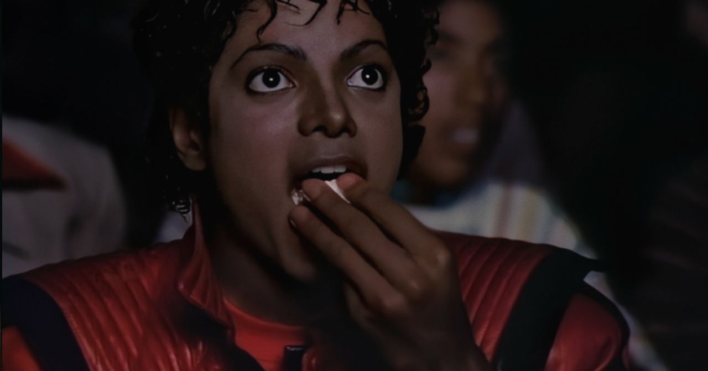

There used to be a different rhythm to how movies lived in the world. They lingered. They stuck with us. A film released in May was still in conversation in August, September, October. People came back.
That rhythm is gone. It’s partly quality (nothing is memorable), but it has more to do with the whole apparatus that has arisen around us, demanding the next thing, constantly. Streaming releases land, peak, and disappear within a week. Nothing has time to settle. When a movie opens now, it has roughly one or two weekends of cultural air, after which the next title arrives and the previous one is expected to step aside. Once a movie isn’t the headline, it’s dust.
It makes it difficult to gauge what’s actually important, and what’s vapor. What we should actually take to heart, and what we should tune out.
But every now and then something transcends that and stays with us, evidence that we are absolutely capable of deep feeling.
Michael is such a case. It opened at #1 in April, fell out of the top spot in its second and third weekends, and returned to #1 in its fourth, this past weekend, playing out in true 1980s box office fashion.
It’s rare in the twenty-first century for a film to stick around like that, and especially unusual in the post-streaming age. For a film to open at #1, fall down a few spots, resurface at #1, fall down a few spots, and repeat for weeks and weeks. The audience around Michael is doing what the cultural machinery doesn’t really make space for anymore: returning to something.
Movies in the 1980s lived in a different climate. The Empire Strikes Back opened in May 1980 and was still drawing crowds the following year. It actually made more in its tenth weekend than its first. Top Gun, in 1986, occupied the cultural conversation through the entire summer and into the fall, dropping in and out of the #1 spot more than once. It wasn’t about distribution patterns or how studios staged their releases, but how movies were allowed to be present in the culture for a long time.
What Michael is doing right now is, against the current grain, a small return to that older rhythm. In the May–June–July stretch—the busiest moviegoing months of the year—this kind of non-consecutive return to #1 hasn’t happened since Lethal Weapon 3 in 1992. The original Top Gun did the same thing in 1986: #1 opening, knocked out of the top spot, back at #1 in its 4th weekend.
Fittingly, Top Gun returned to the top 10 this past weekend alongside Michael, for its 40th anniversary reissue.
There’s only been one other case like this in the post-Covid era, and that is Top Gun: Maverick.
Over Labor Day weekend in 2022, I went to see Maverick with my family at my hometown movieplex in the Finger Lakes. It would reclaim the number one spot that weekend in its 15th week in release.
I noticed its poster on the facade was completely faded, unlike the others. After all, it had been out since Memorial Day.
Usually, you’d find a faded poster left up on an abandoned theater or video store, a symbol of loss. But here, on the contrary, the faded Maverick poster was a symbol of promise. A symbol of life at the movies.